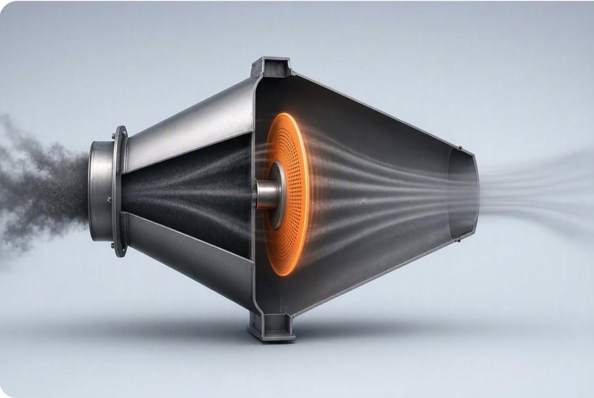

The short answer
Let the dust and the gas decide. Baghouses filter well but dislike moist gas. Electrostatic precipitators (ESPs) work best when dust resistivity sits in a middle range. A rotary particulate collector is a self-cleaning barrier device that does not rely on dust charge. Measure resistivity, gas temperature, dew point and loading first, then compare.
Most plants pick particulate control once and live with it for decades. That makes the choice worth getting right. The three main options sound similar on a brochure. In the stack they behave very differently.
This post compares the technology categories in plain terms. It does not rank brands, and it does not give you a single winner. The right answer depends on your fuel, your dust and your emission limit.
How each one works
Baghouse (fabric filter)
Flue gas passes through fabric bags. Dust sticks to the cloth by sieving and other effects. The dust cake that builds up on the fabric actually raises collection efficiency. Periodic cleaning knocks the cake off into a hopper.
EPA's fact sheet says typical new baghouses are designed for 99 to 99.9 percent collection efficiency, and older units run at 95 to 99.9 percent in practice. Those are design figures for well-run equipment, not a promise for your site.
Electrostatic precipitator (ESP)
Wires charge the particles with an electric field. The charged particles are pulled onto collecting plates. Rappers shake the plates so the dust falls into hoppers.
It is a proven design for large gas flows. But it depends on electrical behaviour of the dust, and that varies from fuel to fuel.
Rotary particulate collector
The Sidel Rotary Particulate Collector (RPC) is a barrier-type collector. A rotating collection disc intercepts particles, and a self-cleaning mechanism keeps the screen face clear. It has one main moving part, with no plates, rappers or bags. It is covered by U.S. Patent 9,682,340 B2.
The reference specification for one unit lists a 99.8 percent design collection efficiency down to 0.1 micron and a 0.5 inch water column pressure drop. Treat these as engineered targets. They are confirmed for a given site only by a metered baseline and a pilot.

Where each one struggles
Baghouses and moisture
EPA states that fabric filters cannot be operated in moist environments. Condensation can cause caking or plugging of the fabric. The gas has to stay above the dew point of any condensable in the stream. Bags also have temperature limits, roughly 500°F with the right fabric.
They also need a medium pressure drop. EPA gives a typical range of 4 to 10 inches of water column. That is fan energy you pay for every hour. And bags wear out, so replacement is a standing maintenance task.
ESPs and dust resistivity
Resistivity is how strongly a dust layer resists electric current. EPA's cost manual explains that above about 2 x 1011 ohm-cm, the dust layer breaks down in a way called back corona. Collection ability drops considerably. Below about 108 ohm-cm, particles are held so loosely that they get knocked back into the gas.
Resistivity moves with temperature, moisture, gas composition and particle makeup. A fuel switch can change it. EPA also notes that rapping puts part of the collected dust back in the gas, typically 12 percent for coal fly ash. The last section of the ESP cannot recapture it.
EPA points out the flip side too. Fabric filters can be a good fit for dust that is hard for an ESP, such as fly ash from low-sulfur coal or ash with high unburned carbon.
Barrier collectors and the usual trade-off
Barrier devices have always had two problems: clogging and pressure drop. The RPC is designed to answer both with continuous self-cleaning and a low-drop geometry. That is the design intent. A pilot on your gas is how you find out if it holds.
Questions that decide the choice
- What is the dust resistivity? If it is outside the ESP's comfortable range, an ESP gets bigger and harder to run.
- Is the gas moist, or close to its dew point? If so, a baghouse is a risk, and you cannot cool the gas for heat recovery without thinking about it.
- What emission limit must you meet? Ask for outlet concentration, not just percent removal.
- How much fan power can you spend? Pressure drop is paid for in electricity.
- What can your maintenance team support? Bag changes, rapper and electrode upkeep, or a single drive.
- Do you want the heat? A standalone baghouse or ESP does not recover heat from the gas. See below.
The heat question most comparisons skip
Particulate control is often treated as a separate job from heat recovery. That leaves value in the stack. Cleaner, particulate-free gas is easier to cool in a condensing heat recovery unit without fouling the heat exchanger. The recovered heat can be held in Novacab TESS thermal storage and, where the temperature supports it, turned into power with an ORC turbine.
This is why Sidel CREN treats the collector as step one of a platform, not a stand-alone box. It matters most on solid-fuel plants such as power generation and steel and metals, and on sugar mill boilers.
Before you pick a technology
A comparison table cannot replace data from your own stack. Sidel CREN starts with a data request and a metered baseline, then a bypassable pilot. Any performance figure is an engineered target until those prove it for your site. See how we work.
Quick answers
How do I choose between a baghouse, an ESP and a rotary particulate collector?
Start with the dust and the gas. Check particle resistivity, gas temperature and moisture, dew point, and your emission limit. Baghouses struggle with moist gas. Electrostatic precipitators struggle with dust resistivity outside their working range. A rotary particulate collector is a barrier device with a self-cleaning disc, so it does not depend on dust charge, and Sidel CREN sizes it only after a metered baseline.
Why can't baghouses run on wet or condensing flue gas?
EPA's fact sheet says fabric filters cannot be operated in moist environments, because condensation can cause caking or plugging of the fabric. The gas has to stay above the dew point of any condensable in the stream, which also limits how much heat you can pull out of it upstream.
What dust resistivity is a problem for an electrostatic precipitator?
EPA's cost manual says back corona is prevalent above about 2 x 1011 ohm-cm, which sharply cuts collection ability. Below about 108 ohm-cm, particles are held so loosely that re-entrainment becomes much more severe. Resistivity also shifts with temperature, moisture and gas composition.